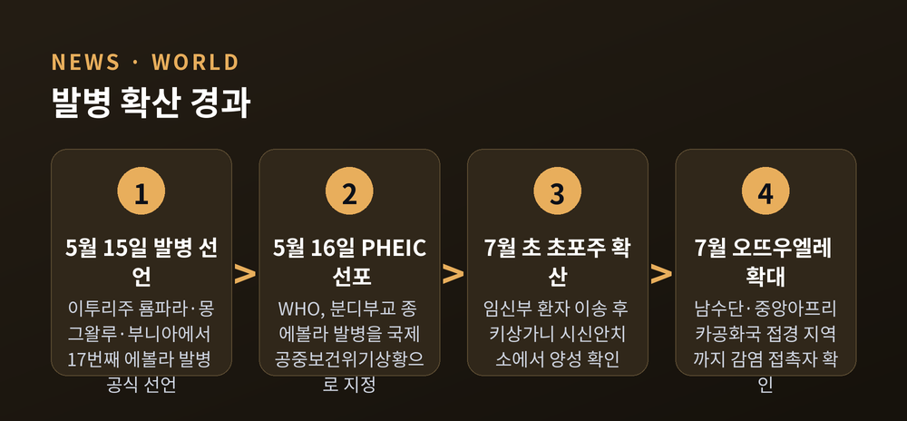
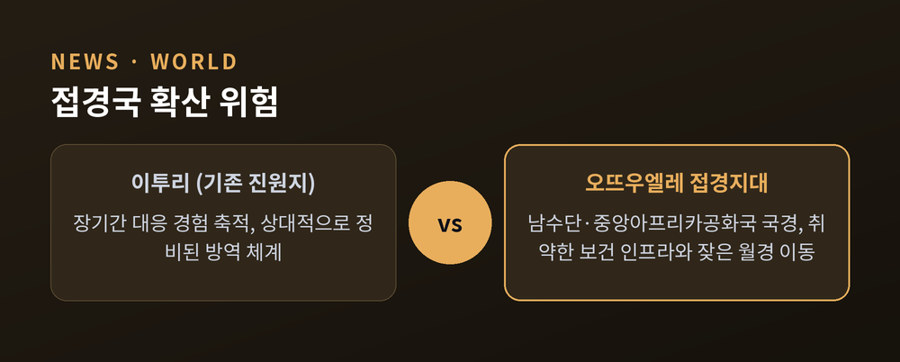
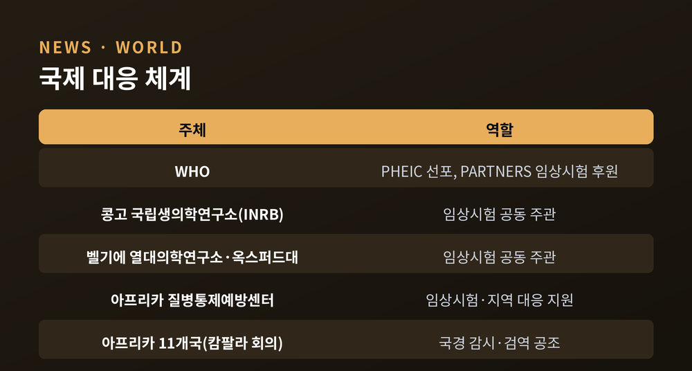

[국제/세계] 콩고 에볼라 새 지역 확산, 발병은 왜 계속 번지나
콩고민주공화국(DRC)에서 진행 중인 에볼라 발병이 기존 진원지인 이투리주를 벗어나 인접한 초포주, 오뜨우엘레주까지 번지고 있습니다. 콩고 보건부에 따르면 2026년 7월 초 기준 사망자는 600명을 넘어섰고, 확산 지역은 총 4개 주로 늘었습니다. 아래에서 확산 배경과 국제 대응, 앞으로의 전망을 정리했습니다.
무슨 일 — 이투리 밖으로 번진 발병
이번 발병은 지난 5월 15일 이투리주 룜파라·몽그왈루·부니아 보건구역에서 공식 선언됐습니다. 원인은 분디부교(Bundibugyo) 종 에볼라바이러스로 확인됐습니다. 발병 초기에는 이투리주 내 확산에 그쳤지만, 7월 들어 상황이 달라졌습니다.
콩고 보건부는 초포주(주도 키상가니)와 오뜨우엘레주에서도 의심 사례가 나왔다고 밝혔습니다. 알려진 경로 중 하나는 이렇습니다. 감염된 임신부가 사망한 뒤 오토바이로 약 290km 떨어진 초포주까지 이송됐고, 뒤늦게 키상가니 시신안치소 검사에서 양성 판정이 나왔습니다. 감염 사실이 늦게 확인되면서 접촉자 추적에도 시간이 걸렸습니다. 오뜨우엘레주로 이동한 감염 접촉자 사례도 확인된 상태입니다.
일부 집계에 따르면 7월 초 기준 확진 사례는 1,700건대, 관련 사망은 600명대 초중반까지 늘어난 것으로 보고됐습니다. 다만 기관·시점에 따라 집계 수치가 조금씩 다르게 발표되고 있어, 정확한 규모는 앞으로도 계속 갱신될 가능성이 큽니다. 발병 초기인 5월 중순만 해도 확진 사례는 한 자릿수에 불과했고 대부분 의심 사례로 분류돼 있었다는 점을 감안하면, 두 달 사이 확산 속도가 상당히 빨라진 셈입니다.

왜 중요한가 — 접경지대 확산 우려
오뜨우엘레주는 이투리주 북쪽에 위치하며 남수단, 중앙아프리카공화국과 국경을 맞대고 있습니다. 이 지역은 평소에도 국경을 넘나드는 인적 이동과 교역이 잦아, 보건당국은 월경(越境) 전파 가능성을 우려하고 있습니다.
특히 남수단은 지역 내에서도 보건 인프라가 취약한 곳으로 꼽힙니다. WHO는 남수단으로 에볼라가 유입될 가능성을 상당히 높게 추정한 것으로 전해졌습니다. 만약 감염이 이런 곳으로 넘어간다면, 조기 발견과 격리 자체가 이투리보다 훨씬 더 어려워질 수 있습니다.
이런 우려를 배경으로 르완다, 부룬디, 탄자니아, 남수단, 중앙아프리카공화국, 콩고공화국 등 아프리카 11개국이 7월 초 우간다 캄팔라에 모여 국경 감시체계와 검역, 대응 공조 방안을 논의했습니다. 국경을 맞댄 나라들이 개별 대응이 아니라 공동 회의체를 꾸렸다는 점은, 이번 발병이 더 이상 콩고 한 나라만의 문제로 보이지 않는다는 방증이기도 합니다. 유엔 산하 기구는 이번 발병으로 인한 경제적 비용이 콩고에서 10억 달러를 넘어설 수 있다고 추산하기도 했습니다. 의료 대응비뿐 아니라 교역·이동 제한에 따른 간접 피해까지 포함된 수치로 풀이됩니다.

전망과 대응 — 백신 없는 싸움
이번 발병 대응이 까다로운 이유 중 하나는 원인 바이러스 종에 있습니다. 기존에 승인된 에볼라 백신과 치료제 다수는 자이르(Zaire) 종을 기준으로 개발됐는데, 이번 발병은 분디부교 종이어서 곧바로 적용하기 어렵습니다. 현재까지 분디부교 종을 겨냥한 승인 백신은 없는 상태입니다.
이런 공백을 메우기 위해 지난 7월 2일, WHO 후원으로 'PARTNERS' 임상시험이 환자 등록을 시작했습니다. 단일클론항체 MBP134와 항바이러스제 렘데시비르의 효과와 병용 가능성을 평가하는 시험으로, 콩고 국립생의학연구소와 벨기에 열대의학연구소, 영국 옥스퍼드대학교가 공동 주관하고 아프리카 질병통제예방센터가 지원합니다.
백신 쪽에서도 움직임은 있습니다. 미국 정부 기관이 분디부교 종을 겨냥한 백신 후보 개발에 자금을 지원하고 있지만, 실제 승인과 대량 접종까지는 상당한 시간이 걸릴 전망입니다. 결국 당분간은 새 치료제·백신에 앞서 접촉자 추적, 국경 지역 검역 강화, 지역사회 신고 체계 정비 같은 기본적인 방역 수단이 확산 억제의 핵심이 될 수밖에 없습니다. 발병이 국경 지대까지 번진 지금, 이 기본기가 얼마나 촘촘히 작동하느냐에 따라 다음 몇 주의 흐름이 갈릴 것으로 보입니다.

이투리에서 시작된 에볼라 발병이 인접 주를 넘어 접경국 위험으로까지 번지는 양상입니다. 치료제 임상시험은 이제 막 첫걸음을 뗐고, 백신은 아직 없습니다. "확산을 멈추는 열쇠는 결국 얼마나 빨리 감염을 찾아내느냐에 달려 있습니다." 다음 소식도 차분히 지켜볼 필요가 있습니다.